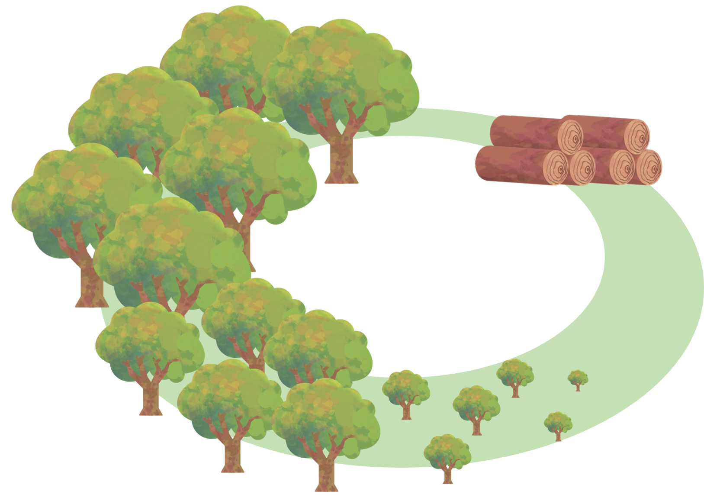
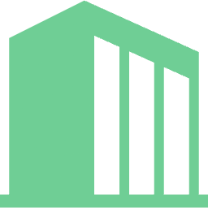
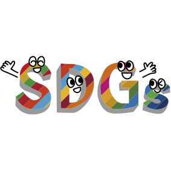
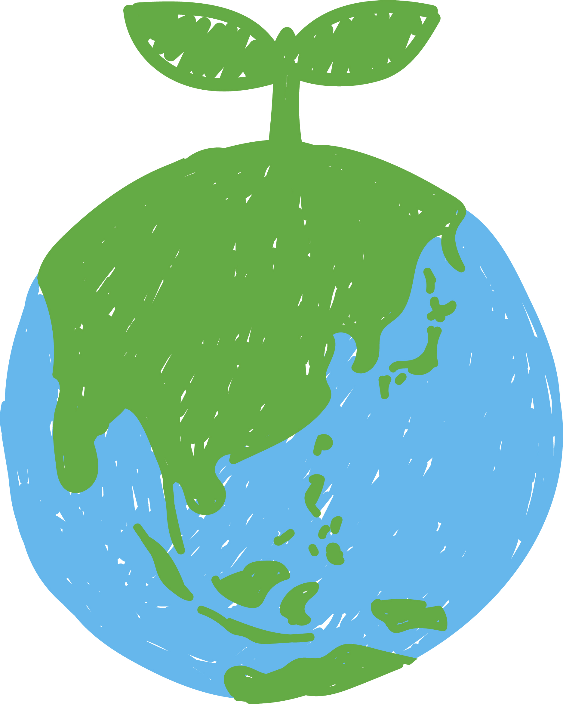

バイオマス
私たち「三進社だからできる」ご提案
バイオマスマークって何？
環境への配慮を「見える化」するサステナブル印刷
追加費用なし
高品質な印刷品質
バイオマスマーク
認定取得
バイオマスとは？
「再生可能な生物由来の有機資源で、
化石資源を除いたもの」です
温室効果ガス（CO₂）の増加を抑制する
カーボンニュートラルな資源です！

バイオマスマークとは？
-
バイオマスを利用した商品に表示できる目印です
弊社の場合は、オリジナルインクにバイオマス資源が含まれています
-
(一社) 日本有機資源協会が運営の主体となり認定を行っています
-
マークの数字は、バイオマス度です
認定商品に含まれるバイオマスの割合を表示しています
バイオマスマークを掲載するメリットは？

イメージアップ
昨今、教育現場でも環境問題を取り上げており、個人単位での環境問題に対する意識も高まっています
サステナビリティの取組みをマークにより「見える化」し、企業・学校・団体様のイメージアップを図れます！
社会貢献
それは同時に
地域・社会貢献に
つながります！
差別化
競合他社の
差別化を
図れます！
どんな商品に入っているの？
食品パッケージやプラスチック袋に多く見られます
お菓子の袋、カップラーメンの容器、調味料のパッケージ等
多くの商品に掲載され、企業のサステナビリティの
取組みが目に見えてわかる時代となりました！
費用と納期は？
追加費用は一切かかりません・・・
どうして？
弊社はより良い印刷物を作るため、独自配合のオリジナルインクを開発しました
そのオリジナルインクにバイオマスマークの認定を取得している為、弊社にとっては特別なインクでなく通常のインクだからです！
納期は？
通常は入稿データをいただいてから、実働10日前後での納品となります
お急ぎの場合は、可能な限り対応いたしますのでご相談ください
バイオマスインクを使用した印刷物の品質は、従来のものと比較してどうなの？
バイオマスインク使用の印刷物と、一般的なインク使用の印刷物の品質（発色）は同等です
インクメーカーに依頼し、乾燥、耐摩擦・印刷仕上がり検査を実施！
弊社のオリジナルバイオマスインクの方が優れているという結果を得ました！
三進社のバイオマス取引実績 (順不同)
- 一般社団法人 日本有機資源協会
- 明治安田生命保険相互会社
- 明治安田商事株式会社
- 第一生命株式会社
- 芝信用金庫
- 株式会社 西武トレーディングTOKYO
- ジャパンゲームフィッシュ協会
- 株式会社CSR
- 多摩大学附属聖ヶ丘中学高等学校
バイオマスインク
三進社オリジナル バイオマスインク60（4Cカラー印刷）

持続可能な自然由来のバイマス原料を、印刷適正を維持できる範囲で配合し、その含有量を極限まで引き上げたインキです。
更に、ノンVOCタイプのインキ※でもあります。
バイオマス含有率：60％
※ノンVOCインキとは、石油系溶剤を含まず、揮発性有機化合物（VOC）をほとんど発生させない環境配慮型の印刷インキです。
特徴
- 高濃度・乾燥性・耐磨性に優れている
三進社オリジナル バイオマスインク40（4cカラー印刷）

持続可能な自然由来のバイマス原料を、印刷適正を維持できる範囲で配合し、その含有量を極限まで引き上げたインキです。
バイオマス含有率：40％
特徴
- 高濃度・乾燥性・耐磨性に優れている
三進社オリジナル バイオマスブラックインク55（スミ1c印刷）
2026年6月に特許を取得しました。（特許第7870041号）
「ピンホール対策に特化したインキ」が対象の特許となります。
バイオマス含有率：55％
特徴
- ピンホールに強い・発色が良い
- 高濃度・乾燥性・耐磨性に優れている
- コミックマーケット用印刷物や同人誌の細かい表現に最適
三進社オリジナル バイオマスインクLED-UV10
LED光を照射させることでインキが固まります。
速乾性に優れている為、短納期に対応できます。
ノンVOCタイプのインキ※です。
バイオマス含有率：10％
※ノンVOCインキとは、石油系溶剤を含まず、揮発性有機化合物（VOC）をほとんど発生させない環境配慮型の印刷インキです。
特徴
- 着肉性に優れている（油性に近い）
- 更に速乾性が良い
- 臭気が少ない